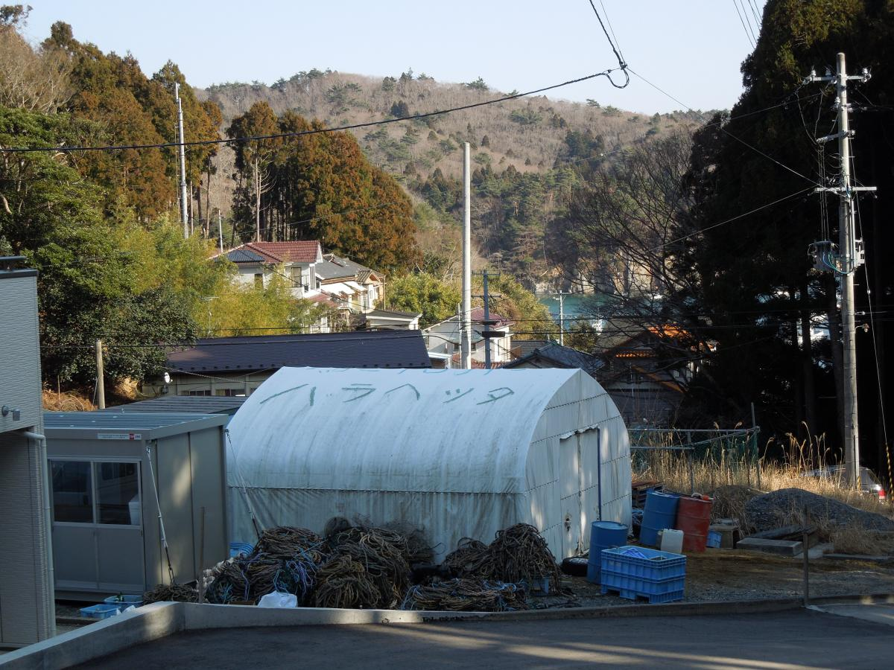

人道ニーズというと生き延びるのに必要な食糧、医療、水、避難施設等をイメージされることも多いと思います。しかし、そもそもどこへ行けばいつどのようにしてこうした物質的な支援を手にすることができるのか、あるいは離れ離れとなってしまった家族は今どこにいて、元気にしているのかといったことを知ることも、被災者の生命と尊厳を守る上で不可欠です。
震災から２年を迎えるにあたり、宮城県石巻市を渡部が再訪し、今回は主に漁業や農業に携わる方々のお話を伺ってきました。昨年同様、その時の模様がOCHA本部ウェブサイトのトップストーリーとして世界に配信されました。また、あわせて石巻訪問の様子がフォトギャラリーとしても掲載されています。
更に詳細を報じた日本語版もあわせて、ぜひご一読ください。
OCHAはネットワーク時代の人道支援に関する英文研究報告書「Humanitarianism in the Network Age」をリリースしました。
インターネット、ソーシャルメディア、モバイルテクノロジー等の進化ととに、特に被災者とのコミュニケーションや情報管理/共有という視点から、緊急・人道支援活動の新しいあり方を問うものとなっています。
東日本大震災から2年を迎えるにあたり、渡部が「日本を人道大国に －東日本大震災2周年に寄せて」と題したメッセージを発表しました。ぜひご覧下さい。
OCHAはこの度、世界の人道支援に関する最新のデータとトレンドをまとめた報告書「World Humanitarian Data and Trends 2012」をリリースしました。これは様々な国連機関などのデータを集約・分析したもので、国別、地域別、災害別の人道ニーズ、またこれに対応するための支援や資金拠出の状況を踏まえ、近年の国際人道支援の特徴や傾向などを、チャートやグラフィックなどを駆使して解りやすくまとめたものです。英語版のみですが、ぜひ一度ご覧下さい。
2012年、中央緊急対応基金(CERF)はヨルダン・ミャンマー・ニジェールなど約50ヶ国で、国連機関による人道支援活動をサポートするため、4億6千万ドルを提供しました。この度、CERFを活用している現場の声をまとめたビデオを作成致しましたので、ぜひご覧下さい。
2012年12月にフィジーやサモアなどを襲ったサイクロン・エヴァンへの対応の応援として、所長の渡部が2012年12月25日から2013年1月9日まで、フィジーのOCHA事務所に派遣されました。
現地で見聞したことをエイド・ワーカー・ダイアリーとして記事にまとめて配信しましたので、ぜひご覧下さい。
日本語版はこちらからご覧いただけます。
2013年1月18日にWHO健康開発総合研究センター(WKC)が神戸で開催する「保健・医療危機問題に対する国際協力」フォーラムに、所長の渡部がスピーカーとして参加します。
詳しくはこちらをご覧下さい。 ちらしはこちらからご覧いただけます。
 人道ニーズというと生き延びるのに必要な食糧、医療、水、避難施設等をイメージされることも多いと思います。しかし、そもそもどこへ行けばいつどのようにしてこうした物質的な支援を手にすることができるのか、あるいは離れ離れとなってしまった家族は今どこにいて、元気にしているのかといったことを知ることも、被災者の生命と尊厳を守る上で不可欠です。
人道ニーズというと生き延びるのに必要な食糧、医療、水、避難施設等をイメージされることも多いと思います。しかし、そもそもどこへ行けばいつどのようにしてこうした物質的な支援を手にすることができるのか、あるいは離れ離れとなってしまった家族は今どこにいて、元気にしているのかといったことを知ることも、被災者の生命と尊厳を守る上で不可欠です。